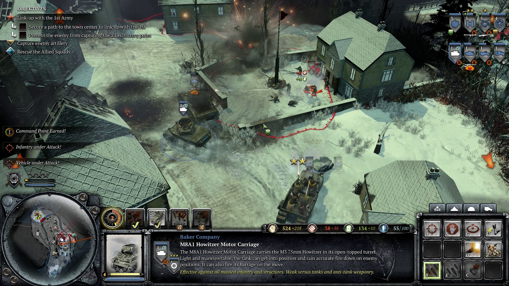

Company of Heroes 2
Company of Heroes 2 je strateska igra u realnom vremenu. Ova igra je nastavak igre iz 2006. godine pod nazivom Company of Heroes. Igra je objavljena 2013. godine.
Igra se desava u Drugom Svetskom ratu i fokusira se na istocni front, dok igrac uzima kontrolu nad Crvenom Armijom i izgurava Nemacku vojsku iz Rusije.
Gameplay
The resource-generation system from the first game has been modified. Players will still capture specific flagged points all over the map to collect munitions and fuel credits, which will be invested in assembling their units.
Most armies can construct caches to increase the fuel or munitions income from these points, though some points produce a higher income of one material but cannot have caches built on them.
Instead of the soldier units actually gathering at the flagged point itself, capturing the point is possible if the player's units are inside a specific zone with no enemy units in the same zone.
The accumulation of these resources and the size of the player's army can be much faster if players capture various flagged points all over the map.
Building
Units can occupy a civilian building and use it as a temporary strongpoint. However, the occupants can be flushed out through attacks by artillery or soldiers using flamethrowers and grenades.
The building-damage system from Company of Heroes is retained and enhanced; wooden buildings set afire will continue burning until they are reduced to cinders.
Furthermore, buildings can be damaged by tanks and light vehicles driving into them. The Soviets' main structure is the Regimental Field Headquarters, which is used to produce conscripts and field engineers.
Combat mechanics
Combat includes controllable units that are recruited and ordered directly by the player (through the user interface at player-controlled buildings, or through a doctrine ability), as well as activated support actions, such as artillery bombardment or air cover suppression.
Every controllable unit type, whether infantry or vehicle, has an associated construction cost and recruitment time, as well as a range of fighting abilities.
